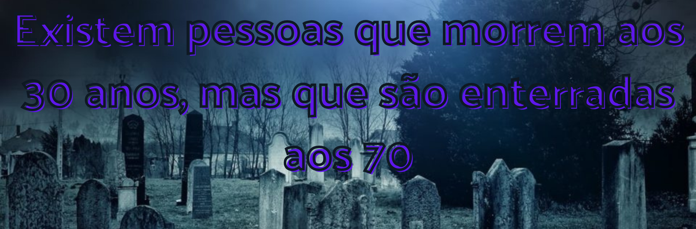
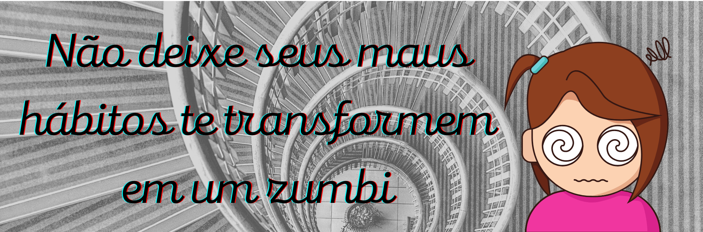
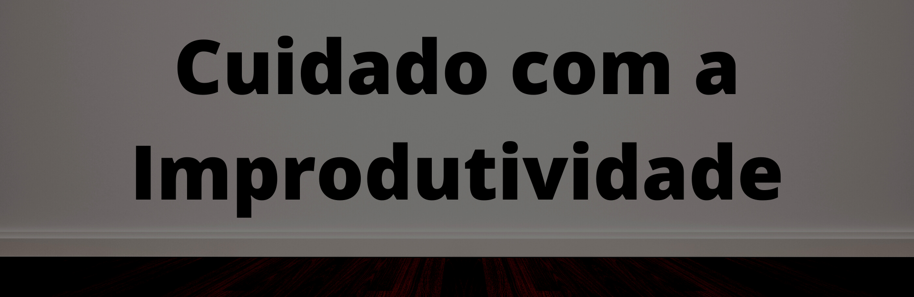

Como zumbis existem?
Eu sei que isso pode ser bem maluco da minha parte mas quero convidar você a refletir junto comigo para assim eu mostrar para você que de certa forma esta teoria faz sentido sim, a primeira coisa que você deve entender, é que esses zumbis... são as próprias pessoas, por incrível que pareça.
Zumbis são pessoas que não possuem propósito
Preste atenção nesta frase e veja se não faz sentido, olha como as coisas fazem sentido, um zumbi vaga por aí sem rumo, sem saber sequer o motivo de sua existência ou o que ele realmente quer da vida, um zumbi passa todos os dias, sem produzir nada para ele de bom, a não ser a preguiça, a procrastinação e improdutividade.
Agora análise essas características de um zumbi e veja se pode ser aplicado em pessoas, e sim, pode ser, inclusive infelizmente a maioria da sociedade vive da mesma forma que o zumbi apresentando acima.
Talvez você seja um deles
Peço que você faça uma autoanálise bem profunda na sua vida e nas pessoas que mais convive, tente identificar se existe algum zumbi em sua família, e aliás, esse zumbi pode ser você, que passa todos os dias numa vida rotineira ou parasitando e sugando a energia de outras pessoas
Aproveitado o assunto quero lhe fazer alguns questionamentos, esses que poderam ajudar você a ter uma compreensão melhor de sua vida. Qual é o seu próposito de vida? Se não tem, como pretende obter? Você usa seu cerébro para alguma coisa, ou vive no modo automático sem colocar sua cabeça para trabalhar? Você tenta sair da zona de conforto? Qual foi a última vez que você se expôs em frente ao desconhecido?
Mas é aí que entra uma dúvida muito comum, como eu faço para deixar de ser um zumbi? basta simplesmente sair da zona de conforto e se expor muito, fazendo isso você é obrigado a usar seu cérebro, uma ferramenta podeosa que Deus te deu, e você vai fazer maravilhas usando ela ao seu favor se tornando o protagonista da sua própria vida, aquele que não assite a vida passar no palco, comece hoje a tomar melhores dcisões, comece hoje a estudar coisas que vai te ajudar a alcançar o sucesso, comece hoje a descobrir seu próposio e pare de viver cada dia de maneira robotizada